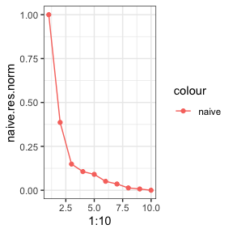

Tutorial: cross-validation for single cell RNA-seq data via count splitting
MSE_tutorial.RmdIn this tutorial, we use simple simulated datasets to show how to use count splitting to do cross-validation for unsupervised learning.
We generate data from a negative binomial distribution. The data has three true clusters.
We start by generating the data, and we will make the data super simple.
library(tidyverse)
set.seed(1)
n=200
p=2
lambda <- matrix(exp(2.5), nrow=n, ncol=p, byrow = TRUE)
clusters <- sample(1:3, size=n, replace=TRUE)
lambda[clusters==2,1] <- exp(5)
lambda[clusters==3,2] <- exp(0.1)
true.overdisps <- c(3,6)
X <- sapply(1:p, function(u) rnbinom(length(lambda[,u]), mu=lambda[,u], size= true.overdisps[u]))
ggplot(data=NULL, aes(x=X[,1]+1, y=X[,2]+1, col=as.factor(clusters)))+geom_point()+
scale_x_log10()+scale_y_log10()
Naive method
There are three true clusters in the data. But if we don’t know this, we may want to try out models with numbers of clusters ranging from 1 to 10 to see which one fits the data best. Unfortunately, if we estiamate the clusters and evaluate them on the same data, we get stuck.
cluster.sse <- function(trainDat, testDat, clusters.est, eps.train) {
totSS <- 0
for (lab in unique(clusters.est)) {
if (sum(clusters.est==lab) > 1) {
clustdat.test <- testDat[clusters.est==lab,]
clustdat.train <- trainDat[clusters.est==lab,]
colmeansTrain <- apply(clustdat.train, 2, mean)
pred.means <- 1/eps.train* colmeansTrain
ss <- apply(1/(1-eps.train)*clustdat.test, 1, function(u) sum((log(u+1)-log(pred.means+1))^2))
totSS <- totSS+sum(ss)
}
}
return(totSS)
}
naive.res <- rep(NA, 10)
for (k in 1:10) {
clusters.est <- kmeans(log(X+1), centers=k)$cluster
naive.res[k] <- cluster.sse(X,X,clusters.est, 0.5)
}
naive.res.norm <- (naive.res - min(naive.res))/(max(naive.res)-min(naive.res))
ggplot(data=NULL, aes(x=1:10, y=naive.res.norm, col="naive"))+geom_point()+geom_line()+theme_bw()
Count splitting (two folds)
A single train/test split can go a long way in helping us with this.
We compare a version where we assume Poisson to two NB versions.
poisSplit <- countsplit(X)
Xtrain.pois <- poisSplit[[1]]
Xtest.pois <- poisSplit[[2]]
pois.res <- rep(NA, 10)
for (k in 1:10) {
clusters.est <- kmeans(log(Xtrain.pois+1), centers=k)$cluster
pois.res[k] <- cluster.sse(Xtrain.pois,Xtest.pois,clusters.est, 0.5)
}
pois.res.norm <- (pois.res - min(pois.res))/(max(pois.res)-min(pois.res))
ggplot(data=NULL)+
geom_line(aes(x=1:10, y=naive.res.norm, col="Naive"))+
geom_line(aes(x=1:10, y=pois.res.norm, col="Poisson count splitting"))+
theme_bw()
knownSplit <- countsplit(X, overdisps=true.overdisps)
Xtrain.known <- knownSplit[[1]]
Xtest.known <- knownSplit[[2]]
known.res <- rep(NA, 10)
for (k in 1:10) {
clusters.est <- kmeans(log(Xtrain.known+1), centers=k)$cluster
known.res[k] <- cluster.sse(Xtrain.known,Xtest.known,clusters.est, 0.5)
}
known.res.norm <- (known.res - min(known.res))/(max(known.res)-min(known.res))
ggplot(data=NULL)+
geom_line(aes(x=1:10, y=naive.res.norm, col="Naive"))+
geom_line(aes(x=1:10, y=pois.res.norm, col="Poisson count splitting"))+
geom_line(aes(x=1:10, y=known.res.norm, col="NB count splitting"))+
geom_vline(xintercept=3)+
theme_bw()
Cross validation via count splitting
We can do even better by doing cross validation!
partition.pois <- countsplit(X, folds=5)
partition.known <- countsplit(X, folds=5, overdisps=true.overdisps)
folds <- 5
poisRes <- matrix(NA, nrow=folds, ncol=10)
for (fold in 1:folds) {
testDat <- partition.pois[[fold]]
trainDat <- X - testDat
for (j in 1:10) {
clusters.train <- kmeans(log(trainDat+1), centers=j, nstart=10)$cluster
poisRes[fold,j] <- cluster.sse(trainDat, testDat, clusters.train, 1-1/folds)
}
}
poisMSEs <- colMeans(poisRes)
poisMSEs.norm <- (poisMSEs-min(poisMSEs))/(max(poisMSEs)-min(poisMSEs))
knownRes <- matrix(NA, nrow=folds, ncol=10)
for (fold in 1:folds) {
testDat <- partition.known[[fold]]
trainDat <- X - testDat
for (j in 1:10) {
clusters.train <- kmeans(log(trainDat+1), centers=j, nstart=10)$cluster
knownRes[fold,j] <- cluster.sse(trainDat, testDat, clusters.train, 1-1/folds)
}
}
knownMSEs <- colMeans(knownRes)
knownMSEs.norm <- (knownMSEs-min(knownMSEs))/(max(knownMSEs)-min(knownMSEs))
ggplot(data=NULL)+
geom_line(aes(x=1:10, y=poisMSEs.norm, col="Poisson count splitting"))+
geom_line(aes(x=1:10, y=knownMSEs.norm, col="NB count splitting"))+
geom_vline(xintercept=3)+
theme_bw()+
scale_y_log10()
which.min(knownMSEs.norm)
## [1] 3What if overdispersion is unknown?
In this section, we generate more realistic data with more genes and
more cells so that we can take advantage of the vst
function from the sctransform package to estimate the
gene-specific overdispersions. We show more examples of this in our
Seurat, Monocle3, and Scran tutorials.